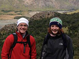
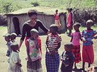
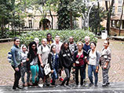
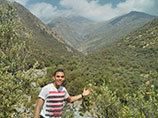
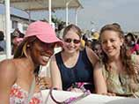

News and Events
Erica Miller- In My Own Words
Universidad del Salvador (USAL), Buenos Aires, Argentina
I studied abroad at the Universidad del Salvador in Buenos Aires, Argentina during the 2012-2013 academic year. As a Spanish major, I went hoping to improve my fluency in Spanish, but in the end, I got so much more out of it. I found myself in an amazing, colorful, chaotic city that never ceased to fascinate me, even after being there for almost a year. Buenos Aires is a blend of Europe and South America and the whole country is a place rich in history and culture. It is a place that is politically charged, caught between a recent turbulent past and their future. I was inspired by how passionate and involved all young people were in politics and government. Through my classes, talking with friends, witnessing strikes and protests over government, economics and class struggle, I learned to really educate myself on current events and politics, and formed my own political opinions, things that we don’t always encourage young people to do in the US. >>
Emmerline Francesca Nelson - In My Own Words
United States International University, Kenya, Africa
I studied abroad in the beautiful city of Nairobi, Kenya located in East Africa in the spring of 2013. I have always desired to study abroad but I believed that I lacked funding to do so. However, I put all of my doubts and negative thoughts aside and decided to visit the study abroad fair during the Fall semester of 2012. I learned about KEI (Knowledge Exchange Institute) in partnership with SUNY Albany’s study abroad program offered at the United States International University (USIU) in Nairobi, Kenya. At that moment I promised myself that I would do anything in my power to participate in the program. Although I became excited and eager after being accepted into the program, on the plane I became sad and felt alone. It hit me that I would be living in a foreign country without any family or friends for three months. I was scared. However, upon arrival I realized that I was not alone. >>
UAlbany Teams Up with South American University to Learn about Brazilian Economy
The University at Albany has teamed up with Mackenzie Presbyterian University in São Paolo, Brazil, to offer its students a new summer study abroad program. Fourteen UAlbany students and recent graduates recently returned to the region from the inaugural trip to South America, where they learned about Brazilian business and its economy >>
Taking courses in Cambodia: Local student flying to Southeast Asia for service, study
QUEENSBURY -- Cambodia 101 is the course on University at Albany junior Ben Cramer’s schedule this semester.Cramer, of Queensbury, was scheduled to leave Friday on a nearly daylong flight for Cambodia, where he will be helping to teach English with the Global Service Corps until December.Cramer, a graduate of Glens Falls High School, said he first became interested in traveling abroad for a service project when a friend, also a student at UAlbany, traveled to Tanzania. >>
From the 9/6/2013 Glens Falls Post-Star
Community Service in Tanzania - Fall Semester
Check out Ayoade Adeyemi's photo essay on his experience in Tanzania during the Fall of 2012. Adeyemi is a senior at UAlbany with a double major in Public Health and Psychology.
Get more details about the Global Service Corps Tanzania Service Learning Program.
Smiley Rojas-Nunez - In My Own Words
Spanish Language & Chilean Culture at ECELA, Santiago, Chile
Warm weather, blue skies and the bright shining sun. This is not the scenery I am used to seeing on December 30th, but this is the beautiful sight I was able to see when I touched down in Santiago, Chile for my study abroad trip this past wintersession. After getting to know the other students who were traveling abroad with me at the airport, we all loaded up into a taxi and then I was dropped off at my host family’s house. Coming from living in a dorm, it was strange to be in such a beautiful home, and it took a while to get used to the fact that that’s where I would be living for the next three weeks. I was first greeted by the father of the house, who took the time to explain to me what life was like in Chile. He could speak both English and Spanish, but as a native Spanish speaker, I was ready and willing to improve my Spanish. >>
Bethany Reichen - In My Own Words
Culture and Customs of Senegal, Senegal, Africa
Every day since I came home, someone has asked me "How was your trip?" and all I can do is smile and tell them "it was amazing!" And then they look at me, expecting more, and for once in my life, I have nothing else to say.
So if you are one of those people, I am sorry. If you have been reading this as I went, then maybe you can understand why it was amazing, although that still does not excuse my lack of further explanation.>>
June 18 to July 11, 2013
3 weeks - 3 credits - $3000
Get more details on how to have your own Senegal experience.
 New Study Abroad Interactive Map
New Study Abroad Interactive Map
Check out our new interactive map where you can explore the programs we offer all over the world. From Finland to Shanghai to Singapore to Tanzania to Antarctica…and dozens of locations in between!
Discover just how "within reach" the world truly is!
 Mike Bresnahan
Mike Bresnahan More...
More...